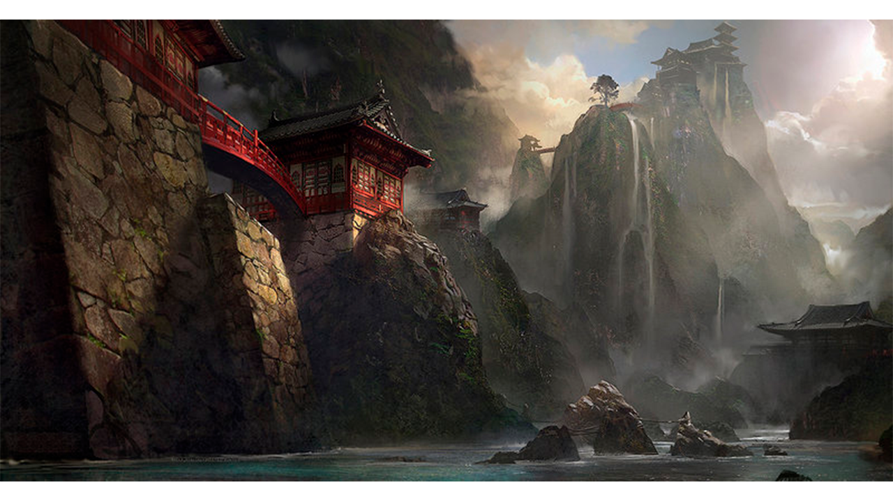
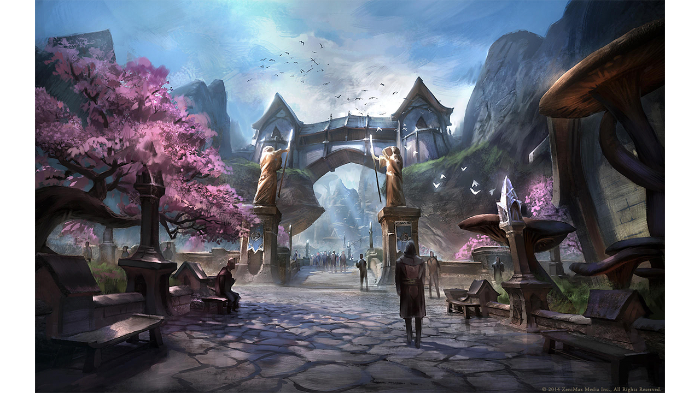
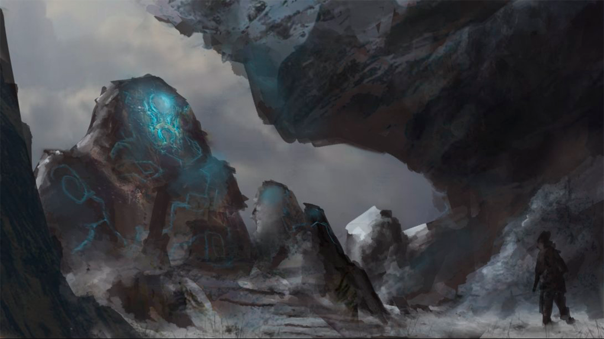
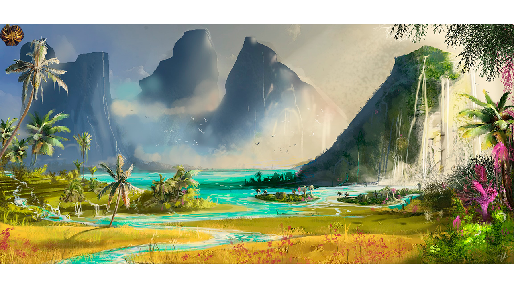
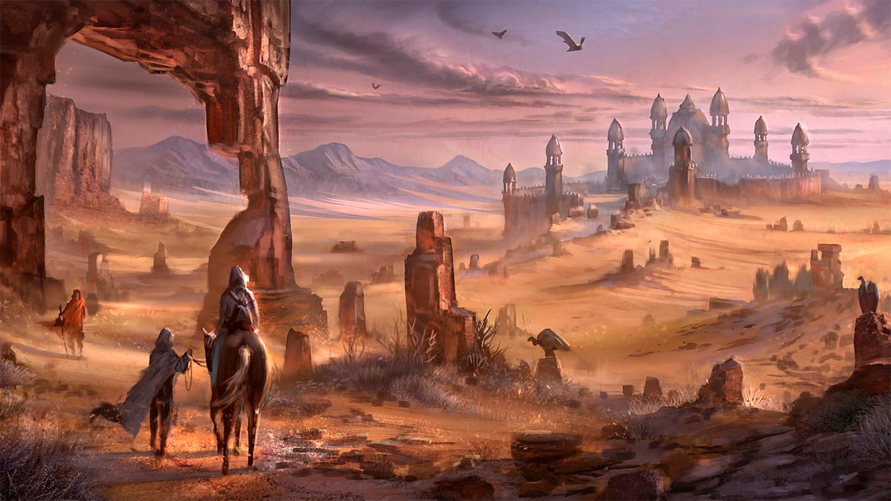
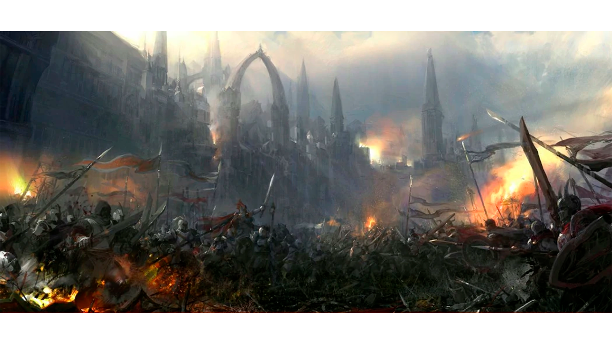

Sistema Solar
En relación a la saga The Elder Scrolls, la cosmología es una de las más interesantes e importantes para entender el universo en el que se desarrollan los juegos. Aquí hallarás información sobre el sistema solar, en el que el planeta Nirn es el protagonista. Se detallan sus características y su relación con las dos lunas que lo orbitan, Masser y Secunda, que también son descritas en profundidad. Además, se explican las creencias religiosas y la mitología en torno a la creación de estas lunas y se mencionan los continentes que conforman el planeta. La sección cosmología es un recurso invaluable para comprender el contexto y la historia de la saga The Elder Scrolls y es imprescindible para los fans de los juegos de rol y de la ciencia ficción.

Nirn, la Tierra Mortal
Nirn es el planeta actualmente existente, en el cual The Elder Scrolls toma lugar. Su nombre significa “arena” o “el campo de batalla” en la lengua élfica (Ald Ehlnofex). Nirn también se conoce como Mundus (“tierra mortal”), situado en Aurbis, entre el Aetherius (“tierra inmortal”), y Oblivion. El planeta es orbitado por dos lunas -Masser y Secunda-, mientras que Nirn se mueve en órbita alrededor de su sol, llamado Magnus. Los continentes de Nirn incluyen Akavir, Aldmeris, Atmora, Pyandonea, Tamriel, y Yokuda.

Lunas
Según libros históricos y creencias populares en la religión cyrodílica, las lunas de Nirn fueron el resultado de la destrucción del cuerpo físico de Lorkhan.
Secunda
De menor tamaño que Masser. En The Elder Scrolls IV: Oblivion, se puede observar como ésta gira alrededor de Masser, por lo que, de no tratarse de un error, Secunda sería la luna de Masser quedando Nirn con tan sólo una luna y siendo Secunda la luna que orbita alrededor de Masser. Pese a todo esto, tanto una como la otra no tienen mucha relevancia en la saga hasta ahora. Cabe destacar que en la expansión de Morrowind The Elder Scrolls III: Bloodmoon, Secunda cambia su color a rojo, haciendo referencia así al título.
Masser
Es la mayor de ellas. Los khajiitas la adoran al tener relación con la forma que éstos cogen al nacer, más concretamente debido a sus fases lunares. El nombre fue otorgado por los primeros mer de Nirn, los aldmer. Gracias al padre de Brand-Shei (personaje de Skyrim), Lyndrenn Telva y su diario, se sabe que ésta alcanza su estado máximo en verano solsticio, que vendría a ser uno de los momentos donde se producen graves cambios estacionales y se ve la máxima diferencia entre día y noche.

Continentes de Nirn
Tamriel
Tamriel es el continente ficticio de la serie de videojuegos The Elder Scrolls. Situado en el planeta Nirn, es la región más extensa del mismo. Mapa político de Tamriel:

Akavir
Akavir (“tierra del dragón” en la lengua nativa de Akaviri) está a unas 4.200 millas al este de Tamriel y es la patria de los Akaviri, que se dividen en cuatro razas: los Kamal (Elder Scrolls), los Tsaesci, la espiga MES, y la cuba de Po de ka. Poco se sabe sobre el continente o la gente de Akavir, pues pocos Tamrielianos se han atrevido a cruzar el extenso océano que lo separa de Tamriel. Se cree que los seres humanos vivieron en Akavir en el pasado, pero fueron exterminados por los Tsaesci, que han lanzado también varios ataques fracasados a Tamriel hace muchas eras. Se indica en un diálogo del juego de Oblivion que Nerevarine (el héroe de The Elder Scrolls III: Morrowind) ha salido para Akavir a través de Morrowind y Oblivion. Una historia que ocurre en Akavir se puede encontrar en el informe del libro del Oblivion: Desastre en Ionith.
Aldmeris
Poco se sabe sobre Aldmeris (llamado Ehlnofey en la lengua de los elfos), a excepción de un rumor que lo sitúa lejos al sur de Tamriel y es supuestamente el hogar ancestral de los Aldmer (Antiguos Elfos, no confundir con Altmer). Es posible que algún Aldmer todavía habite el continente, pero fuera o no verdad sus restos son un misterio, porque todas las expediciones para encontrar Aldmeris hasta el momento han fracasado. Algunos incluso han sugerido que el continente no existe realmente.
Atmora
Atmora es una tierra congelada, inhabitable. Atmora significa “Bosques Antiguos”. Atmora antes era más cálido, sin embargo ahora es un lugar gélido, poblado por los Nedes, que fueron organizados en clanes y lucharon en guerras civiles hacia centenares de años. Hace más de 4.000 años, un hombre nombrado Ysgramor viajó desde este continente distante a Tamriel. Él fundó la ciudad Saarthal, que fue arrasada por los Elfos de las Nieves, los antepasados de todos los Elfos. Ysgramor se retiró de Atmora con sus dos hijos, y levantó un ejército de 500 guerreros de Nedic conocidos como los quinientos compañeros, para vengarse de los Elfos de las Nieves, que fueron exterminados casi totalmente en esa parte de Tamriel. Ysgramor fundó Skyrim, el primer reino humano de Tamriel.
Pyandonea
Pyandonea es un reino que se compone de una serie de islas al suroeste de Tamriel. Visto a veces como continente, las islas están cubiertas por bosques húmedos y es un hábitat de los espíritus de agua. También es la patria de los elfos tropicales o elfos del mar (“Maormer”). El rey de Pyandonea fue Orgnum Inmortal Thras, mago que reclamaba ser Dios-Serpiente de Satakal. Hace tres siglos, la isla rompió su alianza con las islas de Estivalia y Orgnum y emprendió una guerra contra Tamriel. Potema, reina de la ciudad de Soledad (en Skyrim), tendió una trampa a Orgnum, convenciéndolo de que ella ayudara a derrocar al emperador actual, su hermanastro Antíoco. Orgnum hizo planes y su flota comienza el asalto a Tamriel. Cuando la flota de Orgnum pasó cerca de Artaeum, el puerto principal de la Orden Psijic, una tormenta mágica destruyó la flota entera incluyendo a Orgnum. La tormenta fue creada por la Orden Psijic, que fueron sobornados por Potema.
Yokuda
Yokuda está al oeste de Tamriel y es la patria de los Guardias Rojos. Antiguamente era un continente próspero y es lugar de nacimiento de la civilización de Yokudan. Hace 3500 años, Yokuda fue devastada por una ola gigantesca, cuyas causas siguen siendo desconocidas hasta hoy. Algunos creen que fue causada por los Sloads, pero la opinión más común es que el continente estaba en una guerra civil y los Yokudans utilizaron una arma terrible que envenenó el agua y esta salió del suelo de sus tierras, hundiéndolas. Solamente un pequeño archipiélago existe hoy en día. Una parte de los guerreros Yokudan, también conocida como Ra Gada, o “Forebearers”, navegó al este y se establecieron en Hammerfell, donde eran conocidos como Guardias Rojos. Los nobles de Yokuda, los Na-Totambus, o la “corona”, eligieron permanecer en Yokuda y fueron tragados por la ola devastadora. Poco se sabe sobre el continente o su gente antes de que llegaran a Tamriel.
Lyg: Este continente, situado al oeste de Yokuda, supuestamente fue destruido durante la creación del Príncipe Daédrico de la destrucción, Mehrunes Dagon, según el cuarto libro de los Comentarios sobre Mysterium Xarxes.

Sovngarde
Es el lugar en el que se van los héroes nórdicos cuando mueren. Tiene un salón en donde los héroes se quedan y comen.


Aurbis
Aurbis es el reino en el cual se fija el universo de The Elder Scrolls. Es la fundación de todo, incluyendo el "Void"(Vacío), el Un-Void, Oblivion, las tierras de Aetherius, Mundus y los reinos externos.
Aurbis, que proviene del antiguo Ehlnofex y cuyo significado es Arena, es el universo en el cual transcurre la saga de The Elder Scrolls. Es la fundación de todo, incluyen Nirn, los planos de Aeterio, Oblivion y el Vacío. Aurbis fue la primera creación de Anu, que es en sí mismo el Orden y la luz y Padomay, fuerza opuesta que representa el caos, la oscuridad y el cambio, son las fuerzas primordiales.

Aetherius
Aetherius es el reino donde reside toda la magia. Los seres inmortales residen en Aetherius, incluyendo los ex mortales que han aprendido la manera de cómo llegar a ser inmortales. Aetherius Existe “más allá” del reino mortal de Nirn, más allá del reino de Oblivion, y más allá de Aurbis. Éste es el hogar del Aedra - las criaturas adoradas en Tamriel, competidores directos de los Daedra.

Battlespire
Battlespire es una academia de magia que entrenó a la élite de magos de batalla para el servicio del imperio de Cyrodiil de Tamriel. Está situada entre Oblivion, tierra de los Daedra y la tierra "normal" de los humanos. Los orígenes de Battlespire son desconocidos, pero en cierto punto de la tercera era de Tamriel fue devastada completamente y casi destruida por las fuerzas de los Daedra, que avanzaban conducidas por el Príncipe Daédrico Mehrunes Dagon lo que provocó creciente miedo de los Daedra; a esta época se le nombró como la crisis de Oblivion. Este asalto estuvo organizado para conquistar Tamriel y el resto del mundo mortal pero fue parado por un graduado que sobrevivió fuera de Battlespire, derrotó a Dagon y cerró el portal interdimensional. Estos sucesos están presentes en The Elder Scrolls IV: Oblivion.

Oblivion
Oblivion es el reino habitado por los Daedra. Mientras que Oblivion se describe a menudo como “La versión del infierno de The Elder Scrolls”, la metáfora expresada en el juego implica una cosmología supernatural más que compleja. Oblivion es el vacío que rodea Nirn, el plano mortal de la existencia. Los planetas, las nebulosas y otros cuerpos astrales en el cielo son la visión de los mortales de las esferas de Daedra que flotan en ese vacío. Las estrellas son agujeros en la superficie interna de Oblivion a través de la cual la energía de Aetherius brilla en el reino mortal. También lo es el sol, que se conoce como Magnus. La excepción es la constelación de la serpiente, Sithis (con cuál, probablemente, brilla la energía del Oblivion en Aetherius).